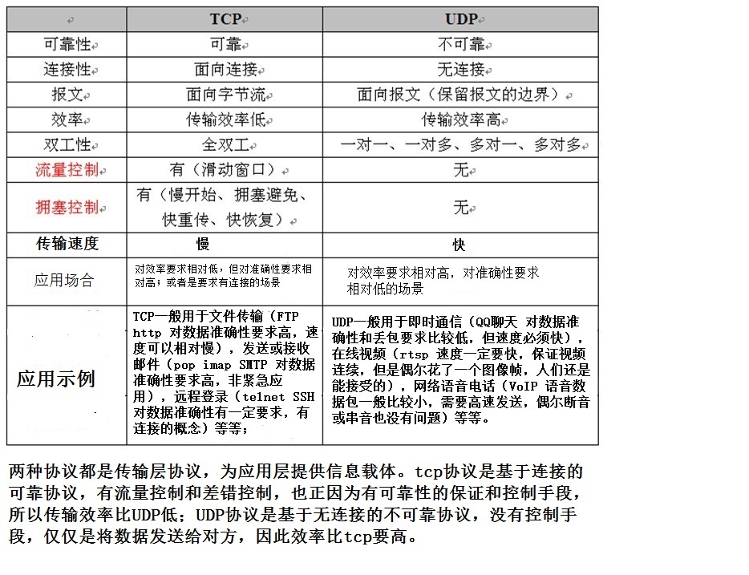

基本概念：
- 面向报文
面向报文的传输方式是应用层交给UDP多长的报文，UDP就照样发送，即一次发送一个报文。因此，应用程序必须选择合适大小的报文。若报文太长，则IP层需要分片，降低效率。若太短，会是IP太小。UDP对应用层交下来的报文，既不合并，也不拆分，而是保留这些报文的边界。这也就是说，应用层交给UDP多长的报文，UDP就照样发送，即一次发送一个报文。
- 面向字节流
面向字节流的话，虽然应用程序和TCP的交互是一次一个数据块（大小不等），但TCP把应用程序看成是一连串的无结构的字节流。TCP有一个缓冲，当应用程序传送的数据块太长，TCP就可以把它划分短一些再传送。如果应用程序一次只发送一个字节，TCP也可以等待积累有足够多的字节后再构成报文段发送出去。
下图是TCP和UDP协议的一些应用。
下图是TCP和UDP协议的比较。

这里再详细说一下面向连接和面向无连接的区别：
- 面向连接举例：两个人之间通过电话进行通信;
- 面向无连接举例：邮政服务，用户把信函放在邮件中期待邮政处理流程来传递邮政包裹。显然，不可达代表不可靠。
TCP/UDP编程模型
从程序实现的角度来看，可以用下图来进行描述。
下图是TCP和UDP协议的比较。
从上图也能清晰的看出，TCP通信需要服务器端侦听listen、接收客户端连接请求accept，等待客户端connect建立连接后才能进行数据包的收发（recv/send）工作。而UDP则服务器和客户端的概念不明显，服务器端即接收端需要绑定端口，等待客户端的数据的到来。后续便可以进行数据的收发（recvfrom/sendto）工作。
在前面讲解UDP时，提到了UDP保留了报文的边界，下面我们来谈谈TCP和UDP中报文的边界问题。在默认的阻塞模式下，TCP无边界，UDP有边界。
对于TCP协议，客户端连续发送数据，只要服务端的这个函数的缓冲区足够大，会一次性接收过来，即客户端是分好几次发过来，是有边界的，而服务端却一次性接收过来，所以证明是无边界的；
而对于UDP协议，客户端连续发送数据，即使服务端的这个函数的缓冲区足够大，也只会一次一次的接收，发送多少次接收多少次，即客户端分几次发送过来，服务端就必须按几次接收，从而证明，这种UDP的通讯模式是有边界的。
TCP/UDP的优缺点：
TCP的优点：
可靠，稳定
TCP的可靠体现在TCP在传递数据之前，会有三次握手来建立连接，而且在数据传递时，有确认、窗口、重传、拥塞控制机制，在数据传完后，还会断开连接用来节约系统资源。
TCP的缺点：
慢，效率低，占用系统资源高，易被攻击
TCP在传递数据之前，要先建连接，这会消耗时间，而且在数据传递时，确认机制、重传机制、拥塞控制机制等都会消耗大量的时间，而且要在每台设备上维护所有的传输连接，事实上，每个连接都会占用系统的CPU、内存等硬件资源。
而且，因为TCP有确认机制、三次握手机制，这些也导致TCP容易被人利用，实现DOS、DDOS、CC等攻击。
UDP的优点：
快，比TCP稍安全
UDP没有TCP的握手、确认、窗口、重传、拥塞控制等机制，UDP是一个无状态的传输协议，所以它在传递数据时非常快。没有TCP的这些机制，UDP较TCP被攻击者利用的漏洞就要少一些。但UDP也是无法避免攻击的，比如：UDP Flood攻击……
UDP的缺点：
不可靠，不稳定
因为UDP没有TCP那些可靠的机制，在数据传递时，如果网络质量不好，就会很容易丢包。
TCP/UDP应用场景：
基于上面的优缺点，那么：
什么时候应该使用TCP：
当对网络通讯质量有要求的时候，比如：整个数据要准确无误的传递给对方，这往往用于一些要求可靠的应用，比如HTTP、HTTPS、FTP等传输文件的协议，POP、SMTP等邮件传输的协议。
在日常生活中，常见使用TCP协议的应用如下：
浏览器，用的HTTP
FlashFXP，用的FTP
Outlook，用的POP、SMTP
Putty，用的Telnet、SSH
QQ文件传输
…………
那么什么时候应该使用UDP：
当对网络通讯质量要求不高的时候，要求网络通讯速度能尽量的快，这时就可以使用UDP。
比如，日常生活中，常见使用UDP协议的应用如下：
QQ语音
QQ视频
TFTP
……
参考文献：
http://blog.csdn.net/ce123_zhouwei/article/details/8976006
http://zhidao.baidu.com/link?url=lMFVNDmMnTe_c3a66Zj0tXaqiIp_VO_mmT2_3fdfgx-GJNnpsUOroV_-uDEZ9FgoPcSU-CAM8ZPAdgW3iGyKiK
http://blog.csdn.net/u013777351/article/details/49226101